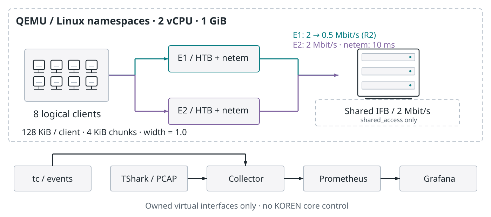
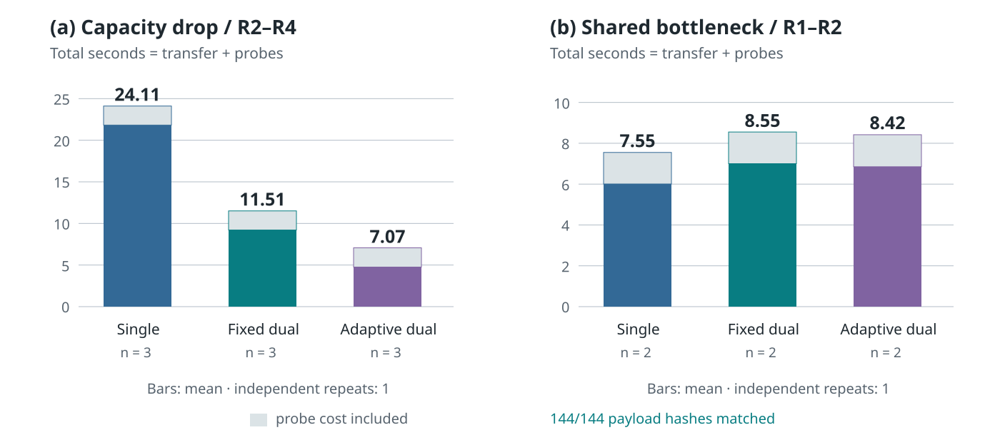

한 경로의 용량이 감소한 조건에서 적응 분할은 고정 분할보다 프로브 포함 완료 시간이 38.6% 짧았습니다. 공통 병목에서는 적응 두 경로가 단일 경로보다 11.5% 느렸습니다. 경로 수를 늘리는 것보다 병목을 구분하는 것이 중요합니다.
Linux 6.18.52, iproute2 7.0, TShark 4.6.6을 사용하는 Alpine 3.24.2를 QEMU TCG의 2 vCPU·1 GiB 환경에서 실행했다. 기기·엣지 2개·서버에 해당하는 네임스페이스 4개를 만들고 실제 veth와 커널 라우팅을 설정했다. 기기 네임스페이스 안의 8개 스레드가 논리 클라이언트이며 물리 기기 8대가 아니다.

클라이언트마다 128 KiB의 결정적인 합성 바이트열을 4 KiB 조각으로 전송했다. 폭은 1.0으로 고정했다. 서버가 재조립한 바이트열의 SHA-256을 기존 양방향 전송 경로로 반환하고 클라이언트가 검증했다. 학습 활성값이나 모델 정확도를 측정한 실험은 아니다. 실험용 조각 크기 4 KiB는 운영 기본 하한 64 KiB와 다르다.
각 경로에 HTB와 단방향 netem 10 ms를 적용했다. edge_drop에서는 첫 라운드에 두 경로가 각각 2 Mbit/s이며 R2부터 E1을 0.5 Mbit/s로 낮췄다. shared_access에서는 두 경로를 각각 2 Mbit/s로 두고 서버의 양쪽 ingress를 하나의 IFB에 모아 합계 2 Mbit/s로 제한했다. 이 공통 병목은 접속 병목의 용량 제약을 대신하는 가상 구성으로, 실제 무선 업링크를 재현한 것은 아니다.
single은 E1만 사용하고, fixed_dual은 두 경로에 같은 가중치를 준다. adaptive_dual은 매 라운드 두 개의 128 KiB 프로브를 동시에 보내 수신 확인까지의 처리율에 비례한 가중치를 준다. 모든 정책에 같은 프로브 비용을 부과했다. 동일한 두 경로를 사용하는 fixed_dual과 adaptive_dual이 정책 비교의 중심이다. 이는 검증용 비례 분할 정책이며 기존 widthpath 또는 network 계획기 전체의 성능 시험이 아니다.
실행 순서는 edge_drop → shared_access, 각 조건 내 single → fixed_dual → adaptive_dual로 고정했다. 연결은 정책별 라운드 사이에 재사용했다. 실행 순서를 무작위화하거나 여러 독립 시드로 반복하지 않았다.

| 조건 | 정책 | 라운드 | 전송 평균(s) | 프로브 평균(s) | 합계 평균(s) |
|---|---|---|---|---|---|
| edge_drop | single | 3 | 21.825 | 2.287 | 24.112 |
| edge_drop | fixed_dual | 3 | 9.210 | 2.297 | 11.508 |
| edge_drop | adaptive_dual | 3 | 4.756 | 2.314 | 7.070 |
| shared_access | single | 2 | 6.007 | 1.543 | 7.550 |
| shared_access | fixed_dual | 2 | 7.002 | 1.550 | 8.552 |
| shared_access | adaptive_dual | 2 | 6.851 | 1.567 | 8.419 |
edge_drop 집계는 용량 감소 이후 R2–R4이고 shared_access는 R1–R2이다. 전체 18라운드의 144개 본 전송이 모두 SHA-256 검사를 통과했다. 프로브 확인, 응용 메타데이터와 회신도 실제 TCP를 사용한다. 프로브 포함 시간은 프로브와 본 전송의 합이며 tc 적용·스냅샷 수집·라운드 사이 대기는 포함하지 않는다.
한 번의 가상 실행입니다. 조건별 라운드는 독립 반복이 아니며 유의성·현장 성능·학습 정확도를 주장하지 않습니다. TCG 가상 CPU, 패킷 캡처, 고정된 정책 실행 순서의 영향을 포함합니다. 특히 단일 경로의 저속 라운드 중 긴 완료 시간이 있었으며 제거하지 않았다. 용량 감소 조건의 개선율을 KOREN 성능이나 독립 반복의 통계적 유의성으로 일반화하지 않는다.
TShark는 기기 네임스페이스의 any 인터페이스에서 TCP 20500번 포트만 캡처했다. 실제 PCAP에 35,058개 패킷과 92개 TCP 스트림이 있으며 Lua 해석기가 6,631개 행에서 응용 전송 ID를 읽었다. 가상 인터페이스에서 TSO/GSO/GRO를 끈 상태를 환경 기록에 보존했다. TCP ACK RTT는 큐 대기와 TCP 흐름을 포함하며 설정된 netem 지연이나 텐서 완료 시간과 동일하지 않다. 재전송 플래그는 독립적으로 측정한 손실률이 아니다.
라운드 전후의 tc JSON을 보존했다. 실행 당시 카운터 파서는 top-level bytes를 예상했지만 iproute2 7.0은 stats.bytes를 반환하여 실시간 바이트 게이지가 0으로 기록되었다. 원본을 보존하고 저장된 커널 스냅샷에서 바이트 차이를 재계산하여 rounds.normalized.json과 counter-normalization.json에 명시했다. 시간과 무결성 결과는 변경하지 않았다. 이후 실행용 파서는 두 형식을 모두 지원하도록 수정했다.
Prometheus는 실제 완료 이벤트를 1초마다 수집했고 Grafana는 이 데이터를 조회한다. Grafana의 최초 플러그인 자동 업데이트 실패로 초기 화면 조회가 중단되어, 제공된 번들의 Prometheus 플러그인을 복구하고 자동 업데이트를 끈 뒤 실제 수집 시계열의 조회를 확인했다. 이는 전송 실험을 재실행하거나 새로운 성능 값을 만든 과정이 아니다.
입증 범위는 소유한 가상 Linux 인터페이스에서 커널 기능을 실제 설정하고, 선택한 경유 구간으로 실제 TCP 바이트를 나누어 보내고, 서버에서 결합·검증하고, 이를 패킷과 대시보드로 추적한 것이다. 기관 간 SDN 위임, KOREN 코어의 라우팅 변경, TCP slow start 커널 패치, 모델 정확도 개선은 입증하지 않았다. 경로 비율 조정은 응용 조각 스케줄러에서, 용량 설정은 커널 tc에서 수행했다.
공유 병목에서는 추가 경로의 효과가 사라졌으며 프로브와 동시 연결의 비용이 남았다. 따라서 적용 논리는 '다중 경로는 항상 빠르다'가 아니라 공유 자원과 완료 지연을 관측하여 폭 제어와 경로 제어의 적용 조건을 구분하는 데 있다.
재현 안내 · 모든 원시 로그·커널 스냅샷 · 실행 당시 정확한 소스 · 출처·SHA-256 원장
| 파일 | 바이트 | SHA-256 |
|---|---|---|
| awarenet.lua | 2,340 | 019e83b0fa419bba600ac9afcf4242b88a3e76f343e03fa92e9349a1a9f18c46 |
| capture.log | 102 | 84c32a1add8f01ef7452ed25602d670a1e9c6bbf17716ad33f2f76e6f3975c39 |
| capture.pcapng | 29,540,988 | 9604ab128282d616d25cac7175c745f49fd6e249503fd0b6396d96b9a1749aff |
| counter-normalization.json | 5,124 | 0faedf98f4e5ed5125d44ab409e4d4e80c866b23db9322b30259bf0add68a49b |
| dashboard.json | 13,187 | 7266c334e3edfef9ea49f734bcadea230fc38fde462cbe8494a697deaad4fb46 |
| environment.json | 4,199 | aa822bd0f0d53ff124d417a30f68017c9432f1ab70c0258ccb50afb0cc486d54 |
| events.jsonl | 48,507 | 8781505ba350cf2e821d4d983e3e9914a9ff689a1f5cba173a3b7525539f03f0 |
| executed-source.tgz | 19,923 | 83149a23c1e276f87e9176564b8bac05c2ebb3ed15ad35e735a6adeb6cdaf9e9 |
| packets.csv | 4,271,031 | abcb7175525165fcb249b3786e5fddc7580d30d6717792cd68c15d8d98144c13 |
| packets.json | 730 | 77d14e4ab18f1878c5301e1a8753aaf9e12ca139e5a9f818fad1a501ebc44d54 |
| prometheus-series.json | 879,640 | 23eacf625eeab0dc26952dfb9d06e68be23244e934df65220fe2a906a19500c8 |
| raw-results.tar.gz | 25,740,437 | f67d59eba4ee398f4971d1a170f452f3d28f3f59732fa0dd9b2c644d74878099 |
| reproduce.md | 6,477 | ada7208b5ca0b63b57ce0e225292ee28b8ae8d95f81ea3757cf56eca6f976675 |
| results.png | 90,404 | 273e9b8f5c0c35c4909ef480e2896417954044bdbfd0e41ce0a56012cabad8ba |
| results.svg | 12,406 | 5537381650575619bdbc4e0ca7cc4a78148c1a8bf82a80dd0623159ef5dcf4a2 |
| rounds.json | 55,067 | 55af1f306011693f7d3145092f238adc9e5cbf0274bd93461750c07d5e5652bb |
| rounds.normalized.json | 57,774 | 3c703bdea739d708e36943ea708fbcf0fe054982259e5dfe19eacf6b3a72c95d |
| station-verification.json | 559 | ae1ca5b9537672eb596213ab6e046349bacbd3ea13a3a0f3a5c6349223650f1c |
| summary.json | 8,135 | aef8fac439976c5c959ab618a7342b4eefd02a948c8d37e9f6718fa12ca71fe5 |
| topology.png | 131,535 | 5a45970349e1380d67c4b7a948757a28ba4f94a435bf1311791b0c23e1c8d299 |
| topology.svg | 14,476 | bdb3b8d8531f4acafe4d54f128f96a8b5a1c5b13071b539902033d8906e9553e |